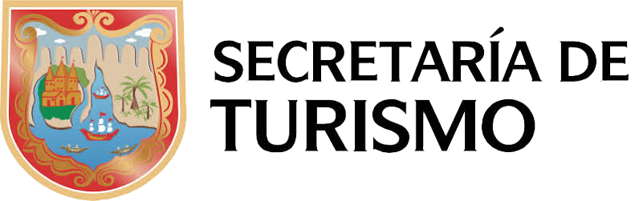
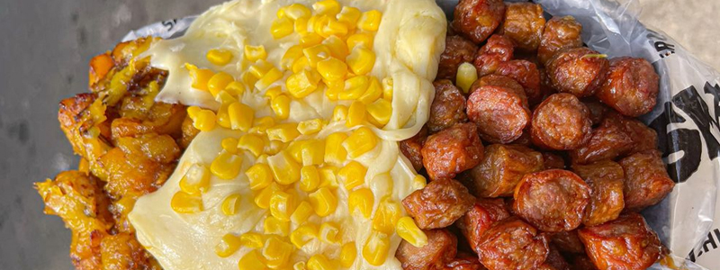
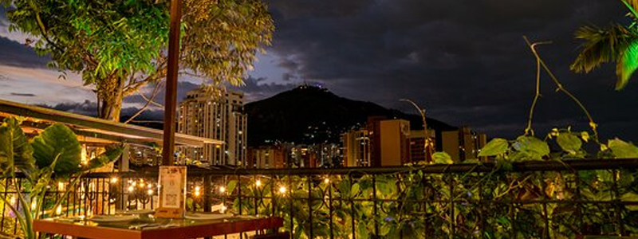

Dónde Comer
En este buscador, vas a poder filtrar por nombre, tipo de establecimiento y por barrio
ver más
En este buscador, vas a poder filtrar por nombre, tipo de establecimiento y por barrio
ver más
En Cali vas a encontrar platos típicos y comida de todo el mundo
ver más
Conoce la gastronomía caleña mientras disfrutas de uno de los barrios más tradicionales de la ciudad
ver más